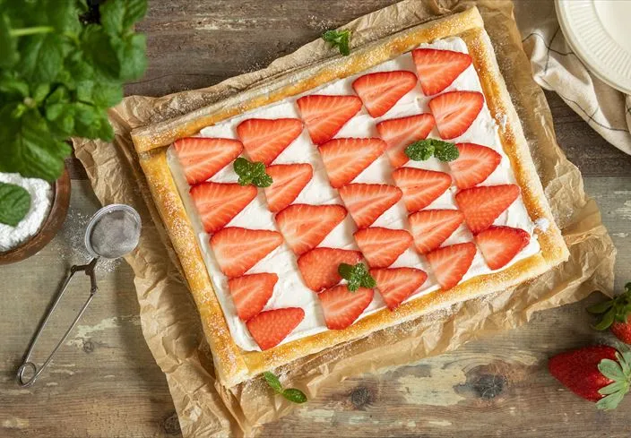
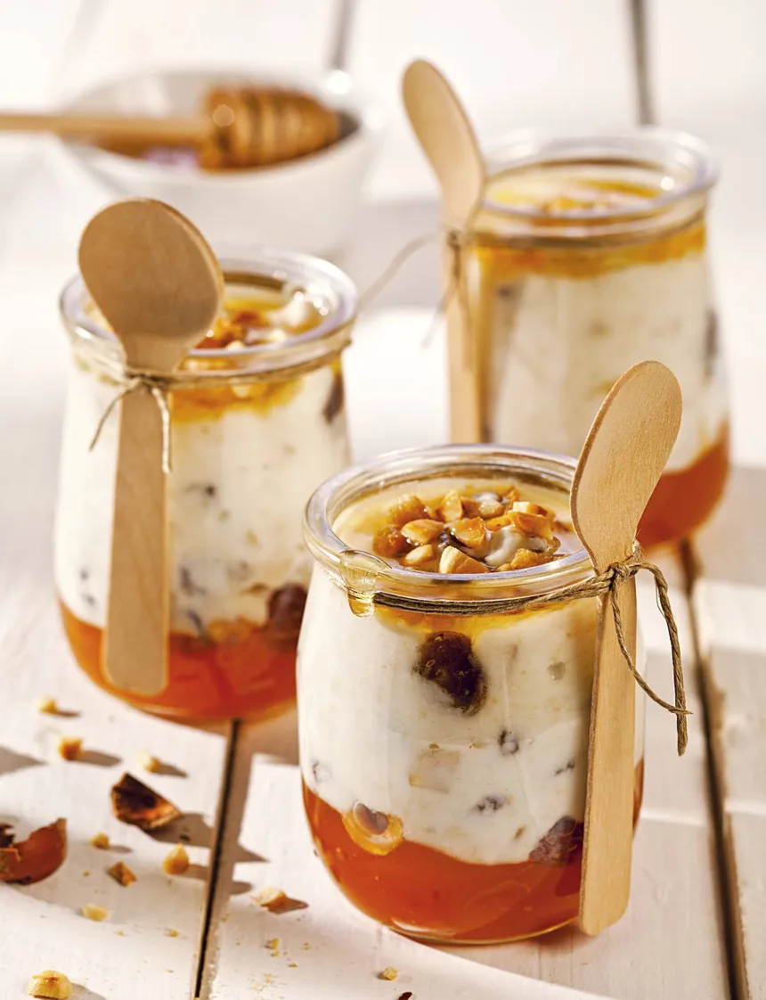

Los postres son platos de sabor dulce o agridulce que se toman generalmente al final de una comida, por ello los que se sirven al final tienen la capacidad de resaltar y estimular cualquier paladar por exigente que sea,
siempre y cuando tengan una buena preparación.
Pastel Sabor Vainilla con Fresas de Adorno
Costo aproximado $250

Es importante considerar que los postres ofrecen una gran aportación calórica y energética, por lo que se han diseñado en la actualidad
gran variedad de postres que cambian algunos ingredientes por otros con menos riesgos para la salud.
Tostada de Ganash y fresas encima
Costo aproximado $25 c/u

Cuando se habla de postres se entiende alguna preparación dulce, bien sean cremas,
galletas, pasteles, helados, bombones, etc.
Tarrito de Miel con Yogurt natural y cereales
Costo aproximado $55 c/u
Antiguamente las comidas eran terminadas con frutos secos o
frescos, miel o productos lácteos. En la Edad Media aparecen los primeros postres franceses
como las compotas, jaleas, fouaces, tortas, gaufres, échoués, pasteles y flanes.
A partir del siglo XVII los postres se convirtieron en composiciones muy elaboradas y adornadas
con flores, con nougats, pirámides de frutas, bizcochos, cremas, almendras dulces con azahar y azúcar,
confiterías secas, nueces. Para finales de este siglo aparecieron los helados, a partir de entonces la
pastelería sufrió una evolución debido a la diversidad de pastas como base, entre ellas el hojaldre, merengue,
pasta choux y la genovesa.
Frios
Este tipo de postres son servidos a temperaturas muy bajas, pueden ser igual o inferior a 25°, además de esto,
su preparación es a base de leche o huevos y cremas solidificadas, con una base de gelatina sin sabor.
Calientes
Estas delicias al paladar son preferidas en especial en la temporada de invierno,
pero pueden ser servidas en cualquier época del año.
Crudos
La elaboración de este tipo de postres saludables es sumamente sencilla, existen
numerosas recetas para la elaboración de este tipo de alimento, que además de fáciles, están llenos de energía.
Horneados
Las recetas de postres horneados son fáciles de elaborar y muy saludables,
ya que al ser cocidos al horno, éstos conservan sus nutrientes y reducen la cantidad de grasa.
Fritos
Estos dulces pueden ser servidos fríos o calientes, pero para su preparación requieren de una fritura.